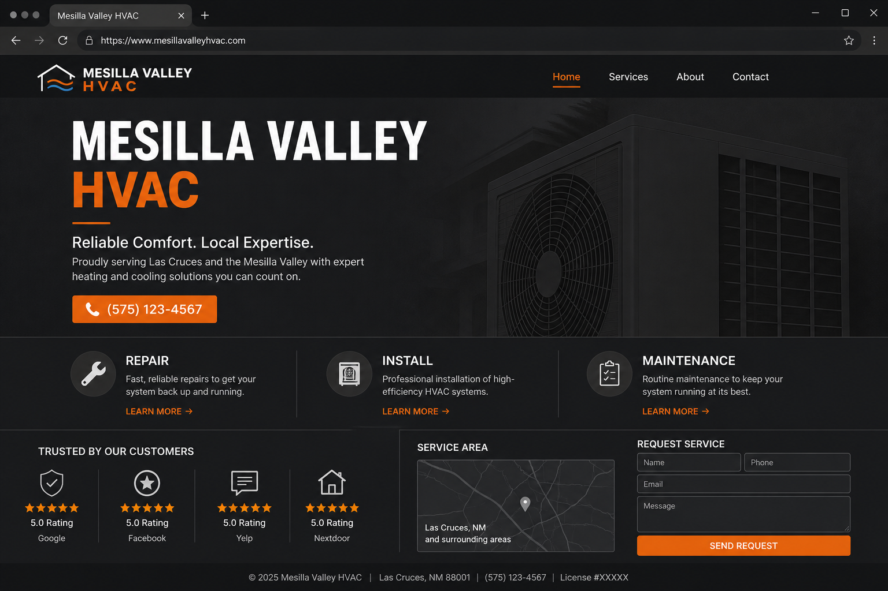
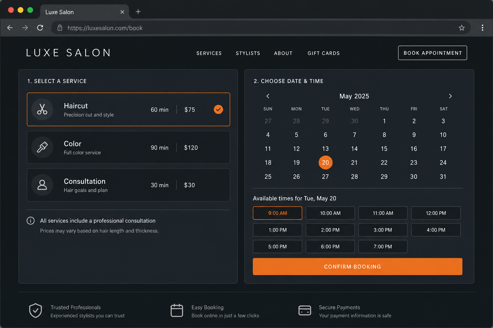
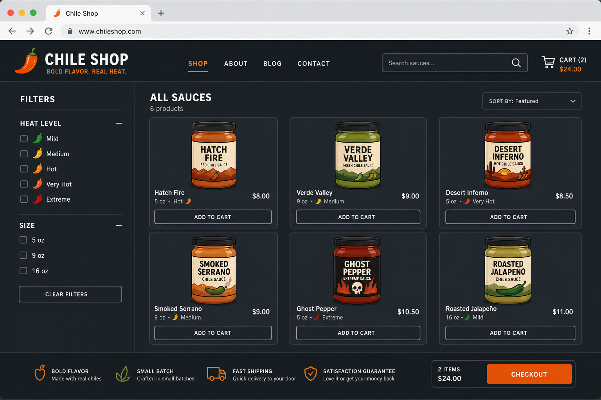
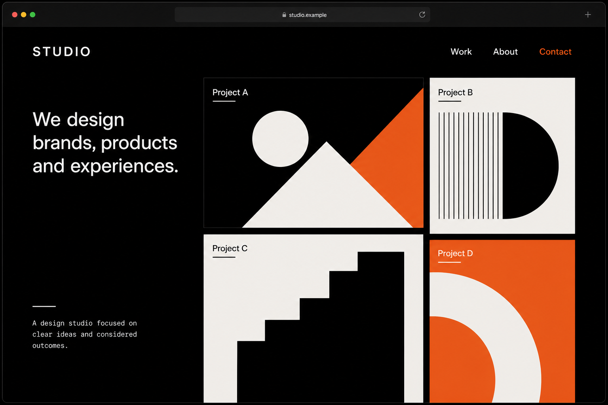
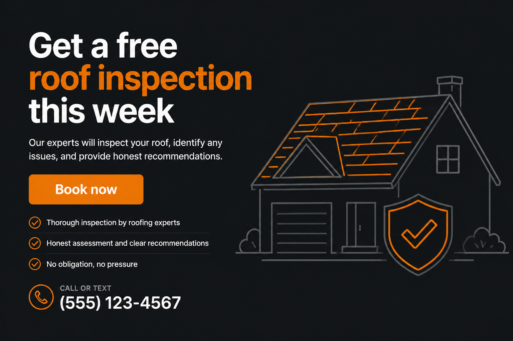

Owners in Las Cruces and Mesilla often ask for “a website” the way someone asks for “a vehicle.” That is too vague. A plumber, a chile brand, a photographer, and a clinic all need a site. They do not need the same machine.
This guide breaks down the main website types small businesses actually use, shows what each one looks like, and matches them to real goals. It pulls from industry breakdowns, consumer research, and the same debates you see when owners talk shop on Reddit. The point is simple: pick the type that matches how people buy from you, then stop overbuilding.
Why the type matters more than the theme
BrightLocal’s local consumer research keeps landing on the same pattern: people search online before they buy local, and a website is still part of the trust path. In recent BrightLocal survey work, most consumers who read positive reviews go on to do more research, and a large share then visit the business website. If that site is missing, slow, or the wrong shape for the next step (call, book, buy), the lead leaks.
Guides from studios that specialize in small-business builds (including Expedition’s 2026 types breakdown and Congero’s practical taxonomy) sort sites by job, not by color palette:
- Sell products now
- Capture a lead or booking
- Prove craft with work samples
- Rank for long-tail search
- Convert paid ad traffic with one offer
Reddit threads in places like r/smallbusiness, r/Entrepreneur, r/shopify, and r/wordpress tend to agree with that split even when people argue about platforms. Service owners get steered toward simple builders or custom brochure/lead sites. Product sellers get pushed hard toward Shopify. SEO-heavy content shops argue for WordPress. The fight is usually about tools. The useful part is the underlying type match.
1. Brochure / local business site
This is the classic five-to-eight page presence: Home, Services, About, Contact, maybe Gallery or Reviews. It exists to prove you are real, show what you do, and make calling or emailing easy. Restaurants, trades, clinics, and Main Street shops live here.

Best when: customers need to trust you before they buy, and the sale happens by phone, in person, or after a quote.
Skip when: you need cart checkout for dozens of SKUs, or every visitor should book a timed appointment online.
For Mesilla Valley businesses, this type pairs well with a complete Google Business Profile. The site answers “who are you?” after someone finds you in Maps or reviews.
2. Lead generation and service sites
Related to brochure sites, but sharper. Every page pushes toward a form, call, or quote request. You get dedicated service pages (“AC repair in Las Cruces,” “roof inspection Mesilla”), testimonials, case snippets, and CTAs above the fold and again at the bottom.
Expedition’s guide flags a common waste pattern: sending paid ad traffic to a generic homepage instead of a focused page. Landing pages and lead-gen service pages exist because matching intent converts better than making people hunt.
Best when: you sell services, not shelf products. Contractors, lawyers, agencies, coaches, B2B providers.
3. Booking and scheduling sites
Same trust job as a brochure site, plus a calendar. Salons, clinics, consultants, and some trades want the visitor to pick a slot without phone tag.

Best when: your inventory is time, and no-shows or phone volleyball cost money.
Watch for: overbuilding. A booking widget on a clean service site beats a bloated membership platform you never use.
4. Ecommerce / storefront
Catalog, cart, checkout, inventory, shipping or digital delivery. This is a different animal from “put our products on a page and ask people to email.” True ecommerce collects payment without a conversation.

Reddit consensus (as summarized across r/Entrepreneur, r/shopify, and ecommerce threads) is blunt: if you sell physical or digital products at any real volume, Shopify is the default recommendation for reliability and checkout. WooCommerce shows up when someone already lives in WordPress and wants deeper customization. Custom builds show up later, when business logic outgrows the platform.
Guides comparing brochure vs ecommerce make the same cut: if customers must talk to you before they buy (bespoke, high-ticket, quote-driven), a store can be the wrong spend. If the product is standardized and shippable, a brochure with photos and no checkout leaves money on the table.
Best when: chile jars, merch, packaged goods, digital downloads, tickets with fixed pricing.
5. Portfolio sites
Work first. Words second. Photographers, designers, builders, and studios need proof, not a 2,000-word homepage essay.

The portfolio sites that convert usually add a short case story per project: problem, approach, result. A contact path on every project page helps. Slow image galleries kill interest before the craft shows.
On Reddit and in builder roundups, Squarespace often gets recommended for visual portfolios. Custom or WordPress wins when SEO and case-study depth matter more than a pretty template.
6. Landing pages
One offer. One action. Almost no navigation. Built for ads, seasonal promos, and campaigns where distraction kills conversion.

A landing page is not a replacement for your main site. It is a spear tip you point paid traffic at. Keep the brand site for organic search, referrals, and deeper trust. Keep the landing page for “Book this week’s offer.”
7. Content and SEO sites
Blogs, guides, resource hubs. Rarely enough on their own for a local service business, but powerful as a layer on top of brochure or lead-gen architecture. This is how you rank for questions people type before they are ready to call.
Consistency beats binge publishing. One solid local guide a month outperforms ten posts in January and silence until December. If search is a major channel, WordPress (self-hosted) still dominates Reddit SEO conversations for control and structure.
8. Hybrids (what most growing businesses become)
Real companies rarely stay in one pure box. A Mesilla restaurant might start as brochure + menu PDF, then add online ordering. A contractor might start as lead-gen, then add a booking calendar and a project gallery. A chile brand might run Shopify for cart and a separate content site for recipes and SEO.
That hybrid pattern shows up in 2026 platform advice too: Shopify for checkout, a content or marketing front for storytelling and search. The mistake is trying to launch every layer on day one.
How to choose in five questions
| If your answer is… | Start with… |
|---|---|
| People call or email for a quote | Brochure or lead-gen site |
| People should pick a time slot | Booking site |
| People buy fixed-price products online | Ecommerce |
| People hire you based on past work | Portfolio |
| You run ads to one offer | Landing page (plus a main site) |
| You need long-term search traffic | Content layer on whatever base you chose |
Studio Slate’s 2026 “do you need a website” framing is useful too: if every customer already walks in from pure referrals and you refuse to grow beyond that, a site is optional. Most businesses that want search, ads, or defense against “I googled you and found nothing” still need at least a minimum viable brochure: who you are, what you do, where you serve, how to contact you, one trust signal.
Not sure which type fits?
Tell Blacnova Development what you sell and how customers currently buy. We will recommend a type and a scoped build, not a template guess.
Sources and further reading
- BrightLocal Local Consumer Review Survey (consumer research after reviews, website follow-through)
- BrightLocal consumer search behavior (how people start local searches)
- Expedition: Types of Small Business Websites (2026)
- Congero: most common website types for small businesses
- NC Digital: should your small business sell online? (brochure vs ecommerce decision)
- Studio Slate: do you actually need a website in 2026?
- Reddit communities commonly cited in builder roundups: r/smallbusiness, r/Entrepreneur, r/shopify, r/wordpress, r/ecommerce (platform recommendations by business type)
Images above are schematic examples created for this article to show layout patterns, not client screenshots.
FAQ
What website type should a Las Cruces service business start with?
Usually a local brochure or lead-gen site: clear services, NAP consistency with Google, mobile phone CTA, and proof. Add booking when phone tag becomes the bottleneck.
Do I need ecommerce for a few products?
If people can buy without a conversation, yes, even a small catalog can use a lightweight store or a hybrid brochure-plus-checkout. If every order is custom, keep quote flow and skip the cart.
Is Instagram enough instead of a website?
Social helps discovery. You do not own the channel. BrightLocal-style research still shows many people move from reviews and social into a website before they commit. A site you control is insurance and a conversion home for ads.
Can Blacnova Development build all of these types?
Yes. We scope brochure, lead-gen, booking, ecommerce, portfolio, landing, and hybrid builds for Mesilla Valley businesses. Type first, then stack and design.
Pick the job, then build the site
The expensive mistake is copying a competitor’s mega-site when you needed a clean brochure, or launching a brochure when you needed a cart. Match the website type to the buyer’s next step. Start focused. Add hybrid layers when the business earns them.
Request a quote · Las Cruces web design guide · Back to the Blacnova Development blog